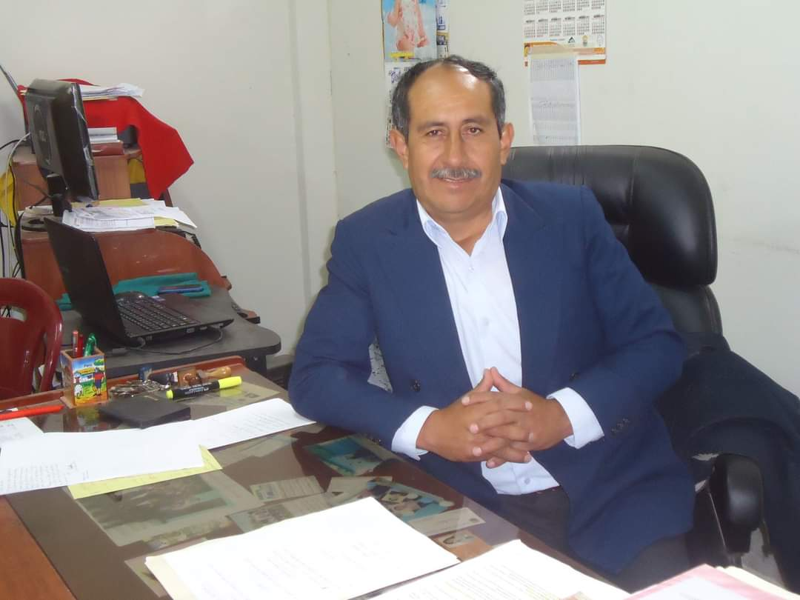
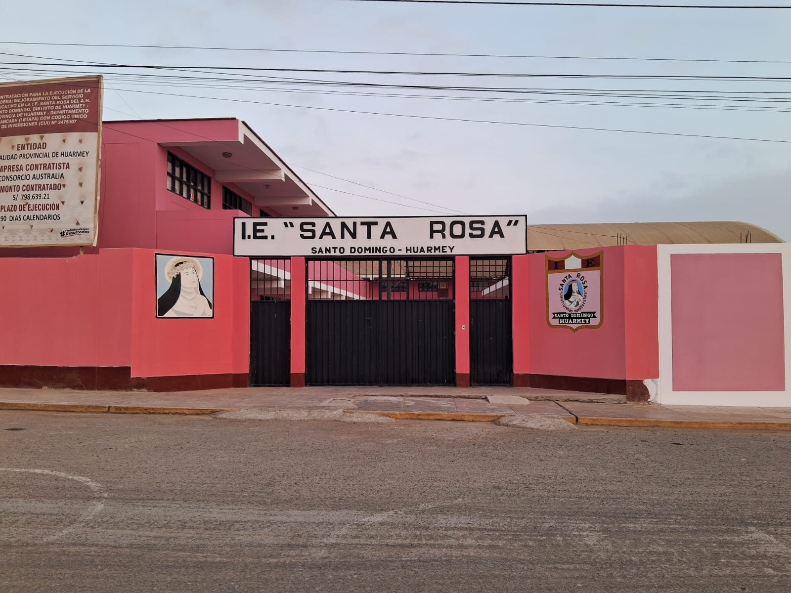

Nosotros
I.E. Santa Rosa de Santo Domingo — Huarmey
Director
Prof. Juan L. Orellano Brito
Director de la Institución
Máxima autoridad responsable de la gestión pedagógica, institucional y administrative, orientada a asegurar la calidad del servicio educativo y el logro de los aprendizajes de los estudiantes de acuerdo a los lineamientos oficiales.

Presentación Institucional

La I.E. Santa Rosa de Santo Domingo es una institución educativa pública ubicada en el centro poblado de Santo Domingo, distrito y provincia de Huarmey, en la región Áncash. Atiende los niveles de Primaria y Secundaria y depende administrativamente de la UGEL Huarmey y de la Dirección Regional de Educación de Áncash (DRE Áncash).
Al ser una de las principales instituciones públicas del centro poblado de Santo Domingo, cumple un papel de vital importancia en la educación básica regular de la zona, atendiendo con dedicación a estudiantes de la comunidad y sectores cercanos. Su carácter mixto y la oferta de ambos niveles garantizan una valiosa continuidad educativa dentro de la misma institución.
Información General
- Ubicación: Calle 31 de Mayo s/n, Centro Poblado Santo Domingo, Huarmey, Áncash.
- Gestión: Pública de gestión directa.
- Modalidad: Escolarizada.
- Género: Mixto.
- Nivel Primaria: Turno mañana.
- Nivel Secundaria: Turno tarde.
Datos de Matrícula y Personal
| Nivel | Estudiantes aprox. | Docentes aprox. |
|---|---|---|
| Primaria | 182 | 9 |
| Secundaria | 127 | 11 |
Aspectos Institucionales
La institución fue sólidamente incorporada al registro de servicios educativos en el año 2001 y se encuentra en estado activo permanente. Su código de local educativo oficial es 025982.
Horizontes Institucionales
Misión
Brindar una educación integral de calidad bajo el marco del Currículo Nacional, que fomente la excelencia académica, la práctica de valores cívico-morales y la apropiación responsable del ecosistema digital, logrando que cada estudiante alcance su máximo potencial.
Visión
Ser reconocidos a nivel regional como una institución educativa líder en innovación tecnológica y pedagógica, formando ciudadanos competentes, críticos, éticos y capaces de contribuir activamente al desarrollo sostenible de Huarmey.
Filosofía y Valores
Nuestra propuesta educativa se fundamenta en el desarrollo humano, la búsqueda de la verdad y el compromiso social. Guiamos nuestro diario accionar bajo cuatro valores pilares:
Responsabilidad
Asumimos las consecuencias de nuestros actos y cumplimos con excelencia nuestros deberes escolares y comunitarios.
Respeto
Valoramos la dignidad de cada persona, la diversidad y promovemos una convivencia escolar armoniosa y democrática.
Innovación
Impulsamos el pensamiento creativo, la investigación científica y el uso constructivo de la tecnología en las aulas.
Solidaridad
Cultivamos la empatía y la ayuda mutua, respondiendo con sensibilidad a las necesidades de nuestro entorno en Santo Domingo.
Reseña Histórica
La historia de nuestra querida institución educativa comienza a escribirse en el año 1967, fecha que tomamos con orgullo como referencia de nuestro aniversario institucional. Fundada para dar respuesta a la creciente necesidad educativa de las familias de Santo Domingo en Huarmey.
A lo largo de las décadas, gracias al esfuerzo conjunto de directivos, docentes y padres de familia, la institución fue creciendo en infraestructura y prestigio, adaptando sus aulas a las sucesivas transformaciones pedagógicas del país.
Organigrama Estructural
- Órgano de Dirección: Dirección del Plantel.
- Órgano de Asesoría: Consejo Educativo Institucional (CONEI).
- Órgano de Línea: Personal Docente y Profesores de Innovación Pedagógica (AIP).
- Órgano de Apoyo: Personal Administrativo, de Servicios y Auxiliares.
- Órgano de Participación: Asociación de Padres de Familia (APAFA) y Municipio Escolar.